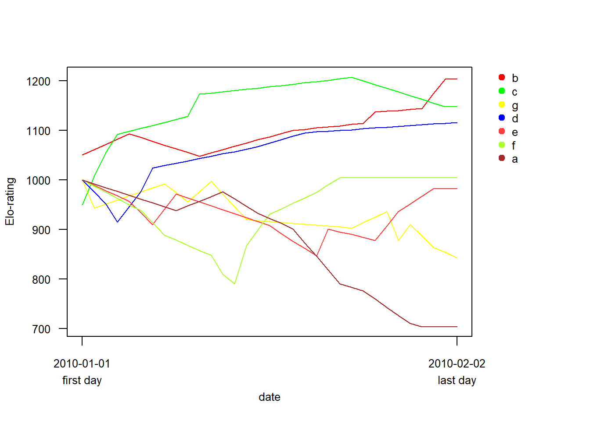

4. Elorating packageを用いた方法
なお、以上で算出した指標はEloRatingパッケージ(Neumann 2011)でも求めることができる。個人的にはデータフレームとして出力してくれるので、こちらの方が使いやすい。
詳細はこちら
library(EloRating)4.1 David’s Scoreとsteepness
算出する際、行列の名前が入っていなければいけないよう。
Davis’s Score
prop=で”Dij”か”Pij”を指定。
EloRating::DS(mat, prop = "Dij")## ID DS normDS
## 1 V 29.575 7.286
## 2 VS 17.261 5.918
## 3 FJ 13.814 5.535
## 4 B 8.790 4.977
## 5 PR 2.228 4.248
## 6 MU -14.998 2.334
## 7 VB -15.744 2.251
## 8 TOR -15.986 2.224
## 9 ZV -24.941 1.229steepness
EloRating::steepness(mat, nrand = 10000)## steep expected p nrand
## 0.7421 0.3024 0.0001 10000.0000同様の結果を得られた。
4.2 linearity
\(h'\)は以下のように求められる。
同様の結果が得られた。
EloRating::h.index(mat, loop = 1000)## variable value
## 1 N 9.0000
## 2 h index 0.9667
## 3 h' index 0.9667
## 4 expected h 0.2969
## 5 p right 0.0010
## 6 randomizations 1000.0000
## 7 tied 0.0000
## 8 unknown 0.0000\(h'\)に変わる指標として、transitivityという指標も提案されている(Shizuka and McDonald 2012)。
EloRating::transitivity(mat, runs = 1000)## Pt ttri p runs
## 0.988 0.952 0.000 1000.0004.3 おまけ(Elo-ratingの計算)
EloRatingパッケージでは、他にも順位序列に関する様々な指標が求められるよう（例えば、時間的な順位の変化を考慮するElo-ratingなど。詳細はこちら）。
例えば、Elo-ratingは以下のような日付と勝敗が示されたデータをもちいて算出できる。
data(adv)
head(adv)## Date Time winner loser
## 1 2010-01-01 15:38:13 b c
## 2 2010-01-02 16:07:30 c g
## 3 2010-01-03 10:26:45 c d
## 4 2010-01-04 15:44:58 c d
## 5 2010-01-05 14:26:55 b e
## 6 2010-01-06 17:31:02 d fElo-ratingの計算。
res <- elo.seq(winner = adv$winner, loser = adv$loser, Date = adv$Date)
summary(res)## Elo ratings from 7 individuals
## total (mean/median) number of interactions: 33 (9.4/9)
## range of interactions: 7 - 11
## date range: 2010-01-01 - 2010-02-02
## startvalue: 1000
## uppon arrival treatment: average
## k: 100
## proportion of draws in the data set: 0ある日付におけるElo-ratingは以下のように求められる。
extract_elo(res, extractdate = "2010-01-28") %>%
data.frame() %>%
rename("Elo-rating" = ".") %>%
rownames_to_column(var = "ID")## ID Elo-rating
## 1 c 1207
## 2 b 1137
## 3 d 1095
## 4 f 1004
## 5 e 936
## 6 g 878
## 7 a 743日付を指定しなければ最終日のElo-ratingが求められる。
extract_elo(res) %>%
data.frame() %>%
rename("Elo-rating" = ".") %>%
rownames_to_column(var = "ID")## ID Elo-rating
## 1 b 1203
## 2 c 1148
## 3 d 1116
## 4 f 1004
## 5 e 982
## 6 g 843
## 7 a 704Elo-ratingの時系列的変化は以下のように描画できる。
eloplot(res)
4.4 おまけ(その他)
EloRaingパッケージでは、様々な論文で用いられている勝敗マトリクスのデータも豊富に取り込める。
de Vries et al. (2006)のボノボのデータ。
data(bonobos)
bonobos## He Dz Ho De Ko Re Ki
## He 0 0 1 2 10 63 8
## Dz 0 0 2 3 0 88 4
## Ho 0 0 0 4 65 84 3
## De 0 0 0 0 0 80 10
## Ko 0 0 0 0 0 4 1
## Re 0 1 5 0 10 0 6
## Ki 0 0 0 0 0 2 0nDSとsteepnessの算出。
DS(bonobos,prop = "Dij")## ID DS normDS
## 1 He 10.9875 4.570
## 2 Dz 9.6891 4.384
## 3 Ho 7.3927 4.056
## 4 De 0.8606 3.123
## 5 Ko -7.2559 1.963
## 6 Re -8.8494 1.736
## 7 Ki -12.8245 1.168steepness(bonobos,Dij=TRUE, nrand = 10000)## steep expected p nrand
## 0.6284 0.2686 0.0001 10000.0000de Vries (1998)のデータ。
data(devries98)
devries98## a v b h g w e k c y
## a 0 5 4 6 3 0 2 2 3 1
## v 0 0 0 0 2 1 2 0 7 7
## b 0 0 0 0 1 1 1 2 2 2
## h 0 3 0 0 0 0 6 0 2 5
## g 0 0 0 1 0 2 4 0 3 0
## w 2 0 0 3 0 0 0 0 2 1
## e 0 0 0 0 0 0 0 0 0 4
## k 0 0 0 0 0 0 0 0 2 1
## c 0 0 0 0 0 1 0 2 0 6
## y 0 0 0 0 0 0 0 0 2 0\(h'\)とtransitivityの算出。
h.index(devries98, loop = 10000)## variable value
## 1 N 10.0000
## 2 h index 0.5818
## 3 h' index 0.6424
## 4 expected h 0.2737
## 5 p right 0.0113
## 6 randomizations 10000.0000
## 7 tied 1.0000
## 8 unknown 10.0000transitivity(devries98, runs = 10000)## Pt ttri p runs
## 0.907 0.630 0.010 10000.000
Balasubramaniam KN, Dittmar K, Berman CM, et al (2012) Hierarchical steepness and phylogenetic models: Phylogenetic signals in macaca. Anim Behav 83:1207–1218
De Vries H (1995) An improved test of linearity in dominance hierarchies containing unknown or tied relationships. Anim Behav 50:1375–1389
De Vries H, Stevens JMG, Vervaecke H (2006) Measuring and testing the steepness of dominance hierarchies. Anim Behav 71:585–592
Leiva H, De Vries H (2014) Testing steepness of dominance hierarchie
Neumann C (2011) EloRating: Animal dominance hierarchies by elo rating
Shizuka D, McDonald DB (2012) A social network perspective on measurements of dominance hierarchies. Anim Behav 83:925–934
Vervaecke H, Stevens JMG, Vandemoortele H, et al (2007) Aggression and dominance in matched groups of subadult icelandic horses (equus caballus). J Ethol 25:239–248
References
Neumann C (2011) EloRating: Animal dominance hierarchies by elo rating
Shizuka D, McDonald DB (2012) A social network perspective on measurements of dominance hierarchies. Anim Behav 83:925–934